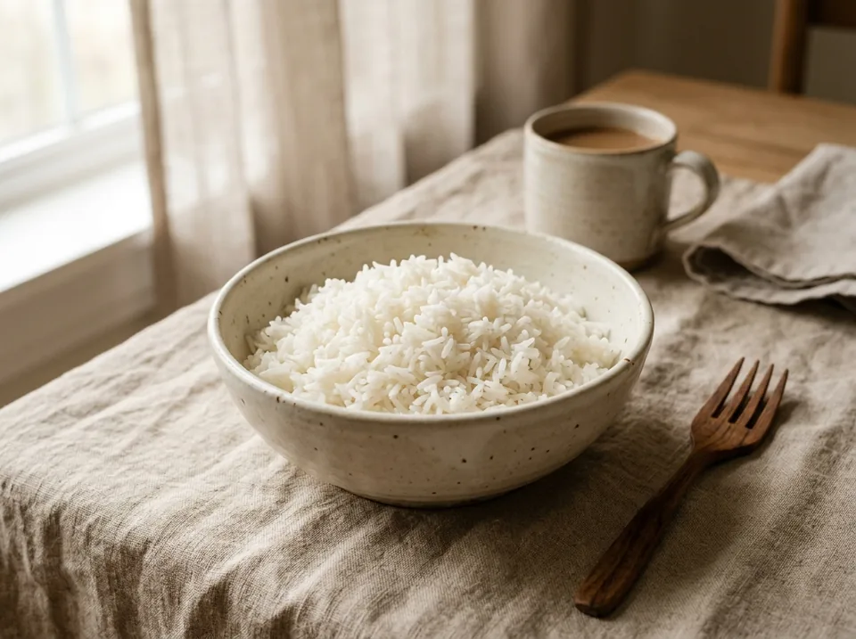

Основные блюда · 25 мин
Рассыпчатый рис на воде
Базовая шпаргалка по варке риса методом полного впитывания (пропорция 1 : 1,5). Никакого сливания воды и вязкой каши — получается воздушно, зернышко к зернышку с первого раза.
К ингредиентам
Ингредиенты · 4 порций
- Рис белый сухой (длиннозерный, Жасмин, Басмати или круглозерный) — 200 г (1 стакан)
- Вода холодная фильтрованная — 300 мл (1,5 стакана)
- Соль — 0,5 ч. л. (по вкусу)
Пищевая ценность
На 100 г: 116 ккал · Б 2.2 г · Ж 0.2 г · У 25.5 г
Шаг за шагом
Промывка от лишнего крахмала (Обязательный шаг!)
Если рис не промыть, поверхностный крахмал склеит его в вязкую кашу. Насыпьте 200 г (1 стакан) сухого риса в миску и залейте холодной водой. Помешайте рукой, слегка перетирая зерна — вода сразу станет белой и мутной. Слейте её и повторите промывку 4–5 раз, пока вода не станет почти прозрачной.
Закладка в кастрюлю (пропорция 1 : 1,5)
Выберите кастрюлю с толстым дном и плотной крышкой. Пересыпьте промытый рис, влейте 300 мл (1,5 стакана) холодной воды и добавьте 0,5 ч. л. соли. Перемешайте ложкой один раз и разровняйте слой.
⚠️ Золотое правило: как только вода закипит, мешать рис ложкой больше НЕЛЬЗЯ до самого конца готовки (иначе зерна ломаются и выделяют крахмал).Закипание
Поставьте кастрюлю на средний или сильный огонь (пока без крышки) и дождитесь момента, когда вода активно закипит по всей поверхности.
Томление под крышкой (12–15 минут)
Как только вода закипела: плотно закройте кастрюлю крышкой и сразу убавьте огонь до самого минимума (на газу — минимальный огонек, на электроплите — 2–3 из 9, чтобы внутри едва-едва булькало). Засеките 12–15 минут. Крышку не поднимайте, чтобы не выпустить пар! За это время рис полностью впитает всю воду.
«Отдых» на пару без огня (10 минут)
Выключите плиту (если плита электрическая и конфорка долго остывает — переставьте кастрюлю на холодную конфорку). НЕ открывайте крышку еще 10 минут! За это время пар внутри равномерно распределится, верхние зернышки дойдут до идеала, а нижние легко отойдут от дна.
Разрыхление вилкой и подача
Откройте крышку и аккуратно взрыхлите готовый рис вилкой (именно вилкой, а не ложкой, чтобы не помять зерна). Рис получится воздушным и рассыпчатым — идеальный гарнир к мясу, курице или рыбе!
Другие варианты
Пропаренный рис (золотистый) — пропорция 1 : 1,7
- Рис пропаренный сухой (золотистый полупрозрачный) — 200 г (1 стакан)
- Вода холодная фильтрованная — 340 мл (1,7 стакана)
- Соль — 0,5 ч. л. (по вкусу)